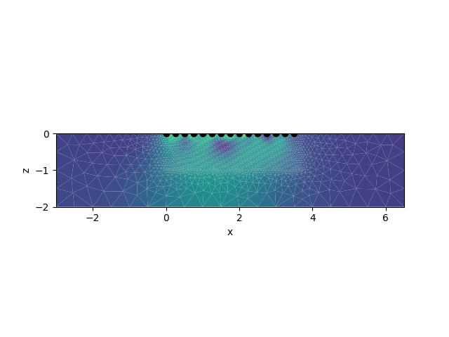
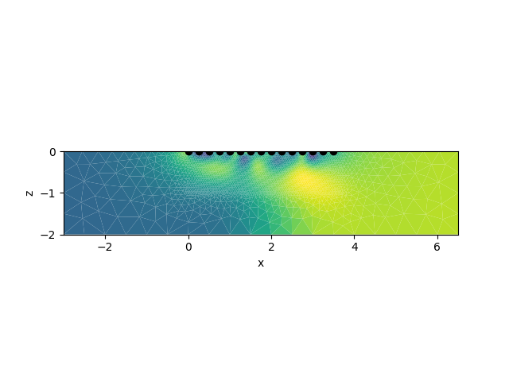

Note
Click here to download the full example code
Plot inversion results from a tomodir¶
import crtomo
tdm = crtomo.tdMan(tomodir='tomodir')
Out:
importing tomodir tomodir
This grid was sorted using CutMcK. The nodes were resorted!
Triangular grid found
importing tomodir results
loaded configs: (220, 2)
tomodir/inv/
is robust True
res_m.diag not found: tomodir/inv/res_m.diag
/home/mweigand/Programme/CRTomo/crtomo_tools/examples/03_inversion_postprocessing
Plot the last magnitude and phase iteration the quick and dirty way. Note that all iterations are stored in the tdm.a[‘inversion’][KEY] list
tdm.show_parset(tdm.a['inversion']['rmag'][-1])
tdm.show_parset(tdm.a['inversion']['rpha'][-1])
- 
- 
Let’s do this the nice way (for phase values only)
import pylab as plt
# extract parameter set ids
pid_pha = tdm.a['inversion']['rpha'][-1]
fig, ax = plt.subplots(1, 1, figsize=(16 / 2.54, 7 / 2.54))
tdm.plot.plot_elements_to_ax(
cid=pid_pha,
ax=ax,
plot_colorbar=True,
xmin=-0.5,
xmax=4,
zmin=-1.5,
cblabel=r'$\phi [mrad]$',
)
Create a depth cut at x = 4 m, down to 2 m depth
pid_pha = tdm.a['inversion']['rpha'][-1]
results = tdm.parman.extract_along_line(pid_pha, [4, -2], [4, 0])
# x y value
print(results)
import pylab as plt
fig, ax = plt.subplots()
ax.plot(-results[:, 2], results[:, 1], '.-')
ax.set_xlabel(r'$-\phi [mrad]$')
ax.set_ylabel('depth [m]')
Out:
[[ 4. -2. -2.83203673]
[ 4. -1.77777778 -2.8332653 ]
[ 4. -1.55555556 -2.79631186]
[ 4. -1.33333333 -2.70289278]
[ 4. -1.11111111 -2.74071026]
[ 4. -0.88888889 -2.90602112]
[ 4. -0.66666667 -3.2129612 ]
[ 4. -0.44444444 -3.61308575]
[ 4. -0.22222222 -4.30371428]
[ 4. 0. -4.55699587]]